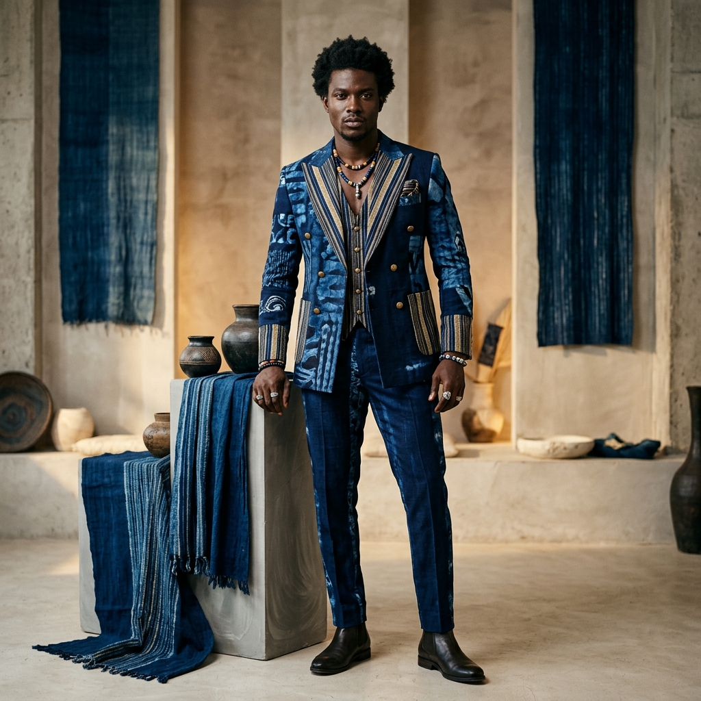

ONYEODIME ATELIER

Blending indigenous textile techniques with structured contemporary tailoring. Onyeodime Atelier specializes in bespoke menswear and womenswear, custom-crafted utilizing hand-dyed indigo Adire and hand-woven Aso-Oke.
Onyeodime Atelier was founded by Nwagbara David Onyeodime, whose design expertise was forged directly in traditional West African weaving cooperatives and elite couture houses.
Rejecting mass production, David trained under master dyers at the Nike Art Gallery to study pattern symbolism and indigo extraction. He spent months immersed in the narrow-loom weaving cooperatives of Iseyin, Oyo State learning traditional Aso-Oke production, before polishing his techniques in luxury bespoke design at the renowned Deola Sagoe Atelier and Mowalola Ogunlesi Design.
Now operating between Middlesbrough, North Yorkshire and Lagos, Nigeria, David's collections blend high-concept design with deep cultural roots.
Junior Designer specializing in textile development and youth culture research.
Studio Intern studying luxury bespoke production processes.
Apprentice weaver, specialized in hand-loomed narrow strip textiles.
Textile apprentice in traditional indigo resist-dyeing (Adire) under master dyers.
Every garment is built from scratch, respecting traditional cycles of dyeing, weaving, and tailoring.
Traditional indigo resist-dyeing. We extract natural blue pigments from local indigo leaves to create intricate geometric and symbolic resistance patterns.
Woven strip-by-strip on narrow wooden looms. We weave raw cotton and silk threads into thick, textured fabrics that form the structure of our couture.
Master tailoring of traditional elements, including structured Agbada shapes, draping layouts, pattern cutting, and bespoke hand-embroidery details.
Showcasing our collections in art institutions and fashion capitals internationally.
An invitation-only presentation of structured menswear collections for collectors and press representatives.
Participant in the Young Designer Mentorship Program, exhibiting textile innovation works.
A comprehensive solo exhibition focusing entirely on garments constructed with hand-dyed Adire indigo fabrics.
Featured textile artist showing raw Aso-Oke weaves and indigo fabrics held in the gallery's permanent archives.
Request a private consultation at our Middlesbrough design office or our Lagos atelier.